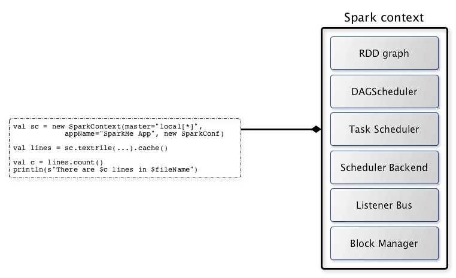

class: center, middle, inverse name: 标题页 ## [NetEase Spark Courses](https://netease-bigdata.github.io/ne-spark-courseware/) <br> <br> <br> <br> ## Apache Spark 概述及快速入门指南 <br> <br> <br> <br> ??? 备注：标题 <br> 帮助信息：在网页端按H键可进入帮助页面 --- class: inverse, center name: agenda # Agenda ## - ** About Me ** ## - ** 什么是 Spark？ ** <br> ** 正确理解 Spark 相关概念 ** <br> ** 怎么用 Spark？ ** <br> ** 如何提升 Spark 技能？ **<br> ??? 备注: 目录<br> 本 TOPIC 从最基本的方面讲解 Spark 入门所需具备的入手手段<br> 内容尽可能的涵盖：<br> 大数据处理的基本知识<br> 从数据开发工程师或者数据分析师角度需要理解的 Spark 的一些基本概念<br> 如何和底层大数据工程师（hadoop/spark 等）及运维合理的交流问题<br> 以及如何在 Spark 这条路上一条道走到黑，走的更远 --- class: inverse name: aboutme .left-column-inverse[ # About Me ] .right-column-inverse[ ## Kent Yao 2016年11月加入网易，目前在杭州研究院-数据科学中心担任资深大数据平台开发工程师，主导 Spark 作为核心计算框架在[网易大数据平台](https://bigdata.163yun.com/mammut)的相关研发及大规模应用工作。 前华为技术有限公司大数据技术开发部成员。 <br> GitHub: https://github.com/yaooqinn <br> <br> <br> ] ??? 备注：个人简介 --- class: inverse name: sub-agenda .left-column-inverse[ # Agenda ## 什么是 Spark? ] .right-column-inverse[ ### 什么是 Spark? ### Spark v.s. Hadoop ### Spark v.s. Hive ### Spark v.s. Impala ### Spark v.s. Flink ] ??? 备注：子目录<br> 本章主要从 Spark 本身及Hadoop生态中的各类优秀组件的比较重，对于 Spark 的能力，定位，场景有较为客观的认识<br> 由于能力、篇幅有限，只能基于当下的场景给出较为片面的个人见解 --- class: inverse name: whatisrddoverview .left-column-inverse[ ## 什么是 Spark? ### 从定义上看 ] .right-column[ <div style="margin-top: 20px;text-align: center; font-size: 25px; background-color: white"> <b>Apache Spark™</b> is a unified analytics engine for large-scale data processing. </div> <div> <img src="../../imgs/spark_basics/spark-stack.png" style="margin-top: 15px; width: 100%; zoom: 2.50; align-self: center;" usemap="#stack-map"> <map name="stack-map"> <area shape="rect" coords="0,0,74,95" href="http://com.netease.bigdata.spark.apache.org/sql/" alt="Spark SQL" title="Spark SQL"> <area shape="rect" coords="74,0,150,95" href="http://com.netease.bigdata.spark.apache.org/streaming/" alt="Spark Streaming" title="Spark Streaming"> <area shape="rect" coords="150,0,224,95" href="http://com.netease.bigdata.spark.apache.org/mllib/" alt="MLlib (machine learning)" title="MLlib"> <area shape="rect" coords="225,0,300,95" href="http://com.netease.bigdata.spark.apache.org/graphx/" alt="GraphX" title="GraphX"> </map> </div> <h3 style="text-align: center; font-size: 25px; color: white;"><span style="line-height: 95px; display: inline-block; vertical-align: bottom;">Apache® Spark™ Ecosystem</span></h3> ] ??? 备注：从定义上理解什么是 Spark <br> 从官方目前给出的定义，Apache Spark 是一台支持大规模数据处理标准统一的分析引擎<br> 模块涵盖了 Spark SQL - 离线结构化数据的处理方案 Spark Streaming - 流式计算框架 Spark MLlib - 机器学习框架 Graphx - 图计算框架 同时这些框架都运行在通用的 Spark Core 底层计算框架上面 得益于 2.x 版本后 API 层面在 SparkSession/DataFrame 上的高度统一，使得用户可以基于 “one stack to rule them all” 来大大滴爽一把。 --- class: inverse name: sparkvshadoop .left-column-inverse[ ## 什么是 Spark? ### 从定义上看 ### 从特点上看 ] .right-column-inverse[ #### 速度块 - DAG - 使用 DAG 对 RDD 的关系进行建模，描述其依赖关系 - [Catalyst](https://databricks.com/blog/2015/04/13/deep-dive-into-spark-sqls-catalyst-optimizer.html) - 优化器框架 - [Project Tungsten](https://databricks.com/blog/2015/04/28/project-tungsten-bringing-spark-closer-to-bare-metal.html) - 内存管理、二进制处理、缓存友好、Code-Gen - [CBO](https://databricks.com/blog/2017/08/31/cost-based-optimizer-in-apache-spark-2-2.html) - 基于代价的优化器 - [Continuous Processing](https://databricks.com/blog/2018/03/20/low-latency-continuous-processing-mode-in-structured-streaming-in-apache-spark-2-3-0.html) - Streaming实现准实时到实时 - ... #### 易用性 - 丰富的高阶 API 算子 - 丰富的语言支持：Java, Scala, Python, R, SQL #### 通用性<span style="font-size: 0.9em; "> - 统一的 API 和 统一的底层模型: One Stack to Rule Them All</span> #### 多平台<span style="font-size: 0.9em; "> - Standalone/YARN/Mesos/K8S; DataSources</span> ] ??? 备注：从 Spark 特点上理解<br> 在图论中，如果一个有向图从任意顶点出发无法经过若干条边回到该点，则这个图是一个有向无环图（ DAG 图）<br> Spark SQL Paper: http://people.csail.mit.edu/matei/papers/2015/sigmod_spark_sql.pdf <br> RDD Paper: https://www2.eecs.berkeley.edu/Pubs/TechRpts/2011/EECS-2011-82.pdf --- class: inverse name: sparkvshadoop .left-column-inverse[ ## Spark v.s. Hadoop ] .right-column-inverse[ <div style="margin-top: 20px;text-align: center; font-size: 25px; background-color: white;"> <b>Apache Hadoop™</b> 大数据基础生态"事实标准" </div> #### HDFS - 大数据存储"事实标准" - 高可靠的分布式文件系统，可作为Spark等计算引擎的可靠底层存储承载 #### YARN - 大数据资源调度"事实标准" - 允许我们各种大数据应用（包括Spark）以多租户的模式共享集群 #### MapReduce - 低阶"呆板"的计算框架 - Spark等等诸多大数据计算框架所challenge的点 ] ??? 备注: spark v.s. hadoop --- class: inverse name: sparkvsmapreduce .left-column-inverse[ ## Spark v.s. Hadoop ### Spark v.s MapReduce ] .right-column-inverse[ <div style="margin-top: 20px;text-align: center; font-size: 25px; background-color: white;"> <b>Apache Spark™</b> 大数据计算框架"事实标准" </div> #### MapReduce缺点 - 抽象层次低，难以上手 - 表达能力欠佳，局限map/reduce算子，Job的lineage管理 - 大量shuffle，大量落盘，不适合迭代 <div style="margin-top: 10px;text-align: left; font-size: medium; "> 事实上就像你要装修房子的时候，不小心选了“清工”，你得告诉泥工干啥，木工干啥，X工干啥，然后在告诉包工头什么时候泥工需要做完啥，木工需要做完啥…… 最后发现实际上就像你用双手装修完了房子 </div> #### Spark的优点 - RDD抽象 - 弹性分布式数据集在单机上的完美表达 - 丰富的算子 - 像乐高积木一样灵活，易玩 - 高效的迭代算法 <div style="margin-top: 10px;text-align: left; font-size: medium; "> 终于把事情交给了一个靠谱的包工头 </div> ] ??? 备注： spark v.s. mapreduce 一个RDD就是一个分布式对象集合，本质上是一个只读的分区记录集合， 每个RDD可以分成多个分区，每个分区就是一个数据集片段，并且一个RDD的不同分区可以被保存到集群中不同的节点上，从而可以在集群中的不同节点上进行并行计算。RDD提供了一种高度受限的共享内存模型，即RDD是只读的记录分区的集合，不能直接修改，只能基于稳定的物理存储中的数据集来创建RDD，或者通过在其他RDD上执行确定的转换操作（如map、join和groupBy）而创建得到新的RDD。 --- class:inverse name: hadoopwordcount .left-column-inverse[ ## Spark v.s. Hadoop ### Spark v.s MapReduce ### Hadoop WordCount ] .right-column-inverse[ ```java public class WordCount { public static class Map extends Mapper<LongWritable, Text, Text, IntWritable> { private final static IntWritable one = new IntWritable(1); private Text word = new Text(); public void map(LongWritable key, Text value, Context context) throws IOException, InterruptedException { String line = value.toString(); StringTokenizer tokenizer = new StringTokenizer(line); while (tokenizer.hasMoreTokens()) { word.set(tokenizer.nextToken()); context.write(word, one); } } } public static class Reduce extends Reducer<Text, IntWritable, Text, IntWritable> { public void reduce(Text key, Iterable<IntWritable> values, Context context) throws IOException, InterruptedException { int sum = 0; for (IntWritable val : values) { sum += val.get(); } context.write(key, new IntWritable(sum)); } } public static void main(String[] args) throws Exception { Configuration conf = new Configuration(); Job job = new Job(conf, "wordcount"); job.setOutputKeyClass(Text.class); job.setOutputValueClass(IntWritable.class); job.setMapperClass(Map.class); job.setReducerClass(Reduce.class); job.setInputFormatClass(TextInputFormat.class); job.setOutputFormatClass(TextOutputFormat.class); FileInputFormat.addInputPath(job, new Path(args[0])); FileOutputFormat.setOutputPath(job, new Path(args[1])); job.waitForCompletion(true); } } ``` ] --- class: inverse name: sparkwordcount .left-column-inverse[ ## Spark v.s. Hadoop ### Spark v.s MapReduce ### Hadoop WordCount ### Spark WordCount ] .right-column-inverse[ ```scala object WordCount { def main(args: Array[String]): Unit = { val conf = new SparkConf().setAppName("Word Count").setMaster("local[*]") val sparkContext = new SparkContext(conf) val textFile = sparkContext.textFile(args(0), 2) val words = textFile.flatMap(_.split(" ")) val ones = words.map((_, 1)) val counts = ones.reduceByKey(_ + _) val res = counts.collect() for ((word, count) <- res) { println(word + ": " + count) } sparkContext.stop() } } ``` 或者一句话搞定： ```scala sc.textFile("README.md").flatMap(_.split("\\s+")).map((_, 1)).reduceByKey(_ + _).collect() ``` ] --- class: inverse name: sparkvshive .left-column-inverse[ ## Spark v.s. Hive ] .right-column-inverse[ <div style="margin-top: 20px;text-align: center; font-size: 25px; background-color: white;"> <b>Apache Hive MetaStore</b> 大数据元数据"事实标准" </div> #### Hive - "原始"的SQL on Hadoop方案 - 实用、使用成本低，往往在中大型的互联网企业中积累了大量的业务和用户 - 查询性能通常很低 #### Spark SQL - 基于Spark Core的SQL on Hadoop方案 - 查询性能很快 - 和Hive的关系可以用"暧昧"来形容 #### Kyuubi - 基于Spark SQL提供企业级SQL on Hadoop解决方案 - https://github.com/yaooqinn/kyuubi ] --- class: inverse name: sparkvsimpala .left-column-inverse[ ## Spark v.s. Impala ] .right-column-inverse[ #### Impala - MPP 架构 - 分治思想、均分 task，share nothing、Scalability问题 - 查询性能最快 - Workload 建议在百亿级别之下 - Impala on YARN 已被放弃，与现有计算集群无法融合 #### Spark SQL - DAG 架构 - MR模型、Shared storage、 全局meta，优秀的Scalability - 查询性能也快 - Workload > 百亿级别 - Spark on YARN 可无缝融入现有计算资源池 ] --- class: inverse name: sparkvsflink .left-column-inverse[ ## Spark v.s. Flink ] .right-column-inverse[ - Flink作为Spark的有力挑战者，正在以新的计算模型尝试解决Spark也在尝试解决的问题<br> <img style="zoom: 0.65" align="center" src="https://mapr.com/developercentral/lambda-architecture/assets/otherpageimages/lambda-architecture-2-800.jpg"> - 两者相互"学习"、"借鉴" - Spark Streaming (Maintained) - DStream、RDD based、微批处理、高吞吐、准实时 - Spark Structrured Streaming - DataFrame Based、 微批处理/Continuous Process、高吞吐、准实时/实时 - Flink - 数据流及事件序列模型、流执行模式、实时 ] --- class: inverse name: sub-agenda .left-column-inverse[ # Agenda ## Spark Glossary ] .right-column-inverse[ ### SparkContext ### Application ### Configuration ### Deployment ### Monitoring ### Tuning ] ??? 备注：理解 Spark 相关的术语及其背后包含的语义， 有助于用户正确理解 Spark 的构成 有助于用户正确和底层平台开发和维护人员进行有效的沟通 --- class: inverse name:sparkcontext .left-column-inverse[ ## Spark Glossary ### SparkContext ] .right-column-inverse[ - the entrance / the heart / the master of a Spark APP  ] --- class: inverse name: application .left-column-inverse[ ## Spark Glossary ### SparkContext ### Application ] .right-column-inverse[ 一个Spark应用是一个由包含 SparkContext 实例主程序作为 Driver 进程，并协调一堆独立的 Executor 进程构成的一个 Master/Salve 的结构<br> <img src="http://spark.apache.org/docs/latest/img/cluster-overview.png"> ```scala Driver Program - 包含 SparkContext 对象的用户主程序, 调度节点 Executor - task处理节点、计算节点 Cluster Manager - 管理集群计算资源的外部服务，常见的有 Standalone Mesos, k8s, YARN ``` ] ??? Spark运行架构包括集群资源管理器（Cluster Manager）、运行作业任务的工作节点（Worker Node）、每个应用的任务控制节点（Driver）和每个工作节点上负责具体任务的执行进程（Executor）。其中，集群资源管理器可以是Spark自带的资源管理器，也可以是YARN或Mesos等资源管理框架。 与Hadoop MapReduce计算框架相比，Spark所采用的Executor有两个优点：一是利用多线程来执行具体的任务（Hadoop MapReduce采用的是进程模型），减少任务的启动开销；二是Executor中有一个BlockManager存储模块，会将内存和磁盘共同作为存储设备，当需要多轮迭代计算时，可以将中间结果存储到这个存储模块里，下次需要时，就可以直接读该存储模块里的数据，而不需要读写到HDFS等文件系统里，因而有效减少了IO开销；或者在交互式查询场景下，预先将表缓存到该存储系统上，从而可以提高读写IO性能。 --- class: inverse name: applicationcomponents .left-column-inverse[ ## Spark Glossary ### SparkContext ### Application ] .right-column-inverse[ Application ``` - 用户主程序 - 包含主程序依赖、Spark jars， 可包含多个Job ``` RDD ``` - 用户编程模型，只读的、分布式的数据集及包含的运算的非分布概念抽象 - transformation - 指定RDD之间的相互依赖关系 - action - 用户执行计算，指定输出形式 ``` Job ``` - 以 action 算子为划分 ``` Stage ``` - 以 shuffle 算子划分，也即下游的算子有可能需要从上有算子全量的全量输出中获得输入 ``` Task ``` - 对应 RDD 分区数，将一个 stage 划分成一堆 task，由 Driver 调度到 Executor 计算 ``` ] ??? 在Spark中，一个应用（Application）由一个任务控制节点（Driver）和若干个作业（Job）构成，一个作业由多个阶段（Stage）构成，一个阶段由多个任务（Task）组成。当执行一个应用时，任务控制节点会向集群管理器（Cluster Manager）申请资源，启动Executor，并向Executor发送应用程序代码和文件，然后在Executor上执行任务，运行结束后，执行结果会返回给任务控制节点，或者写到HDFS或者其他数据库中。 Spark通过分析各个RDD的依赖关系生成了DAG，再通过分析各个RDD中的分区之间的依赖关系来决定如何划分阶段，具体划分方法是：在DAG中进行反向解析，遇到宽依赖就断开，遇到窄依赖就把当前的RDD加入到当前的阶段中；将窄依赖尽量划分在同一个阶段中，可以实现流水线计算 两类操作的主要区别是，transformations（比如map、filter、groupBy、join等）接受RDD并返回RDD， 而action操作（比如count、collect等）接受RDD但是返回非RDD（即输出一个值或结果）。 RDD提供的转换接口都非常简单，都是类似map、filter、groupBy、join等粗粒度的数据转换操作，而不是针对某个数据项的细粒度修改。 --- class: inverse name: configuration .left-column-inverse[ ## Spark Glossary ### SparkContext ### Application ### Configuration ] .right-column-inverse[ Spark Properties ```scala # 配置文件 conf/spark-defaults.conf # 硬编码 val conf = new SparkConf().setMaster("local[2]").setAppName("NetEase") # 动态传参 bin/spark-submit \ --name "Netease" \ --master local[4] \ --conf spark.eventLog.enabled=false myapp.jar ``` <br> <br> 更多可参照文档: https://spark.apache.org/docs/latest/configuration.html#spark-configuration ] --- class: inverse name: deployment .left-column-inverse[ ## Spark Glossary ### SparkContext ### Application ### Configuration ### Deployment ] .right-column-inverse[ Cluster Manager ``` - spark.master / --master - Standalone - 在集群上启动对应的Master 和 Worker进程，作为资源的管理器 - Local - 单进程充当Driver和Executor - Mesos - Apache下的开源分布式资源管理框架 - YARN - 生产环境首选资源管理器，支持Hive、Spark、Flink各种任务的资源调度 - k8s - 暂时还是实验特性 ``` Deploy Mode ``` - spark.submit.deplyMode / --deploy-mode - client - Driver 运行在本地，ApplicationMaster 只作为 Executor Launcher - 该模式一般用于调试场景，可以方便自己查看 Driver 端日志，定位问题 - 单机的负载极限 - Driver 潜在的网络瓶颈 - cluster - Driver 运行在 ApplicationMaster 内 - 该模式一般用于生产环境 - YARN ApplicationMaster带 failover 可防止一些潜在问题 - 同一集群内 Driver 所处网络环境较好 - 同一NodeManager节点过多 Container 而产生的本地资源竞争 - spark.driver.cores - spark.driver.memory ``` ] --- class: inverse name: monitoring .left-column-inverse[ ## Spark Glossary ### SparkContext ### Application ### Deployment ### Configuration ### Monitoring ] .right-column-inverse[ Live UI ``` http://<driver-node>:4040 ``` History Server ``` http://<history-server-url>:18080 ``` Metrics ``` $SPARK_HOME/conf/metrics.properties ``` Log ``` # 配置 $SPARK_HOME/conf/log4j.properties ``` ``` # 一般定位顺序 Driver -> ApplicationMaster -> Executor -> NodeManager ``` ``` # 命令 yarn logs -applicationId [app_id] -appOwner [user_name] ``` ] --- class: inverse name: debugstring .left-column-inverse[ ## Spark Glossary ### SparkContext ### Application ### Deployment ### Configuration ### Monitoring ] .right-column-inverse[ ### toDebugString ```scala scala> val wordCount = sc.textFile("README.md").flatMap(_.split("\\s+")).map((_, 1)).reduceByKey(_ + _) wordCount: org.apache.spark.rdd.RDD[(String, Int)] = ShuffledRDD[21] at reduceByKey at <console>:24 scala> wordCount.toDebugString res13: String = (2) ShuffledRDD[21] at reduceByKey at <console>:24 [] +-(2) MapPartitionsRDD[20] at map at <console>:24 [] | MapPartitionsRDD[19] at flatMap at <console>:24 [] | README.md MapPartitionsRDD[18] at textFile at <console>:24 [] | README.md HadoopRDD[17] at textFile at <console>:24 [] ``` ] ??? Spark的这种依赖关系设计，使其具有了天生的容错性，大大加快了Spark的执行速度。因为，RDD数据集通过“血缘关系”记住了它是如何从其它RDD中演变过来的，血缘关系记录的是粗颗粒度的转换操作行为，当这个RDD的部分分区数据丢失时，它可以通过血缘关系获取足够的信息来重新运算和恢复丢失的数据分区，由此带来了性能的提升。 --- class: inverse name: monitoring .left-column-inverse[ ## Spark Glossary ### SparkContext ### Application ### Deployment ### Configuration ### Monitoring ### Tuning ] .right-column-inverse[ 如何从数据层面下手调优 ``` 数据类型 (primitive) FileFormat（json / parquet / orc...) 文件分区、分桶 小文件问题 数据倾斜问题 单个 partition / task 的 workload ... ``` 如何从资源层面下手调优 ``` Driver（内存的配置） Executor (内存、核数)大小的配置 所属 Yarn 队列资源的通盘考虑 Hadoop集群“超售” - 网络、磁盘、NodeManager load... ... ``` 如何从代码层面下手调优 ``` 避免 shuffle / 广播 预聚合 kryo序列化 RDD 复用 / 持久化 高性能算子 RDD -> DataFrame/Dataset ``` ] --- class: inverse name: sub-agenda .left-column-inverse[ ## Spark之路 ] .right-column-inverse[ #### 源码学习: - Spark源码 - https://github.com/apache/spark <br> - 三方库源码 - https://spark-packages.org/ <br> #### 文档学习: - 官方文档 - http://spark.apache.org/docs/latest/ <br> - 官方博客 - https://databricks.com/blog <br> #### 其他： - https://github.com/netease-bigdata/ne-spark-courseware - https://github.com/jaceklaskowski/mastering-apache-spark-book - 远离 <b>王家林</b> ] --- class: middle, center, inverse name: greetings # Q & A --- class: middle, center, inverse name: greetings # Thank You! ### [Kent Yao] <a rel="license" href="http://creativecommons.org/licenses/by-nc/4.0/"><img alt="Creative Commons License" style="border-width:0" src="https://i.creativecommons.org/l/by-nc/4.0/88x31.png" /></a><br />This work is licensed under a <a rel="license" href="http://creativecommons.org/licenses/by-nc/4.0/">Creative Commons Attribution-NonCommercial 4.0 International License</a>.